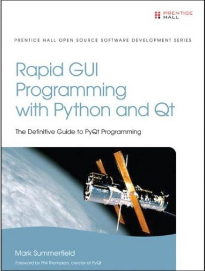

A sample chapter is available free from InformIT—click "Sample Content" and then "Download the chapter" (almost at the bottom of the page).
This book teaches programmers how to write programs using PyQt 4, the Python bindings for the Qt 4 application development framework. PyQt 4 is probably the fastest and easiest route into GUI programming and works on Windows, Mac OS X, and most operating systems that use the X Window System, such as Linux and many Unices. Note that the book is also useful for PySide programmers. (Be aware that from PyQt4.6, PyQt now has two slightly different APIs—but this only affects Python 3 out of the box and doesn't affect Python 2 users unless they want it to.)
The book will be useful to people who program professionally as part of their job, whether as full-time software developers, or those from other disciplines, including scientists and engineers, who need to do some programming in support of their work. It is also suitable for students—the only prerequisite is basic knowledge of an object oriented programming language, for example, Java or C++, or of course Python itself.
The book is ~550 pages (648 including the appendices and index), has a foreword by Phil Thompson creator of PyQt, and is published by Prentice Hall. It can also be bought from other online and local book stores.
Only the printed editions are definitive—although available in electronic formats, "ebooks" usually restrict your rights, and they are often retypeset which can introduce errors. A legal PDF version is available from InformIT. Translations are arranged by the publisher and their quality can vary considerably.
In view of the EU’s Cyber Resilience Act and an abundance of caution, we have withdrawn all our free software, including our book examples.
Part I is designed to quickly teach Python to non-Python programmers so that they can use the rest of the book. This part is also useful to Python programmers because it covers some of the non-GUI Qt classes, and some of the Python techniques that are often used in GUI programming, such as partial function application.
Most of the text is in Parts II, III, and IV. The chapters in these parts cover similar ground to my C++/Qt books, but have been written entirely from scratch with different examples and written from a totally PyQt 4 perspective. Also, some topics are included that are not covered by my other books, for example, the rich text engine, and some more advanced model/view programming techniques.

To convert any particular example to PySide the steps are as follows:
python3 in the first line with python.
from __future__ import division
from __future__ import print_function
from future_builtins import *
PyQt4 with PySide throughout (e.g., in the
imports){} in format strings with
{0}, {1}, etc., as appropriate.[0] at the end of every QFileDialog.*()
function call. (In PyQt these return a—possibly
empty—filename; in PySide they return a filename–filter
2-tuple, but all the examples only need the filename.)QT_VERSION_STR with qVersion().PYQT_VERSION_STR with PySide.__version__;
you will also need to add import PySide in the imports after
the future imports.@pyqtSignature with @Slot.def isAlive(qobj): ... with def isAlive(qobj):
return Shiboken.shiboken.isValid(qobj). This assumes import
Shiboken. (I learnt this from Eric Thomson.)chr with unichr.These conversions are sufficient in most cases. However, a few of the examples' behavior is not correct even after these changes. And unfortunately, I don't have the time to investigate.
For more information on the tools the book teaches see the Python website, the Qt Software website (makers of Qt), the Riverbank website (makers of PyQt 4), and the PySide website (makers of PySide, official Nokia-sponsored Python bindings for Qt, largely PyQt compatible). And for those interested in scientific and engineering programming the Python(x,y) Python distribution should be of interest.
See also my Python Programming Tips.
Like all my books and most of my other writings, this book was written using the Lout Typesetting System.
Your Privacy • Copyright © 2006 Mark Summerfield. All Rights Reserved.